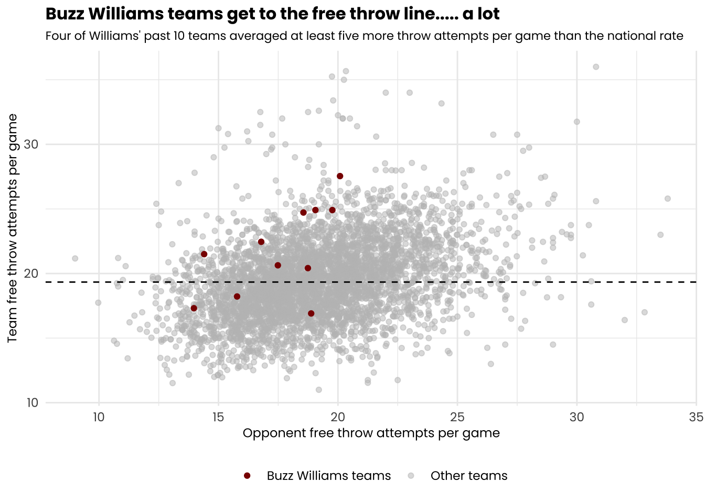
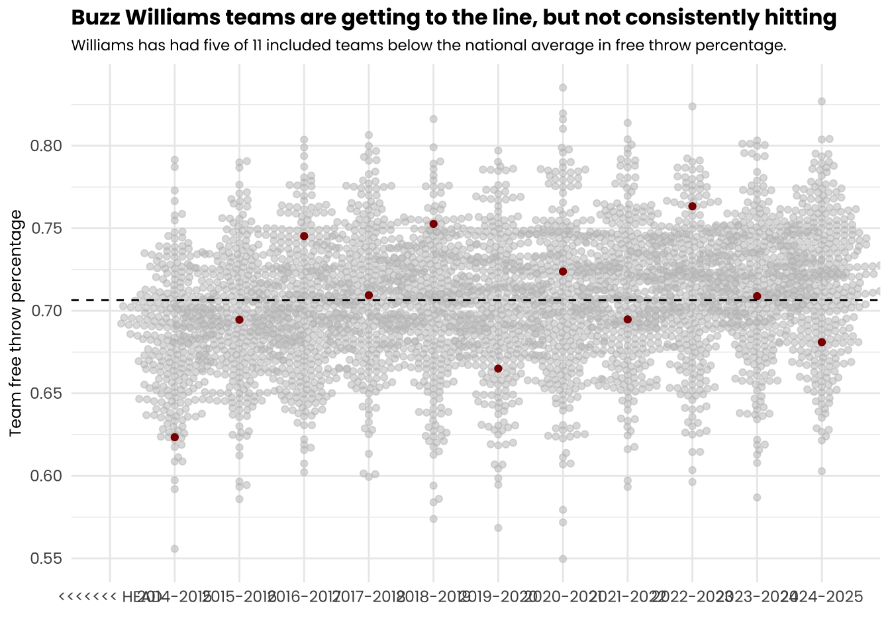
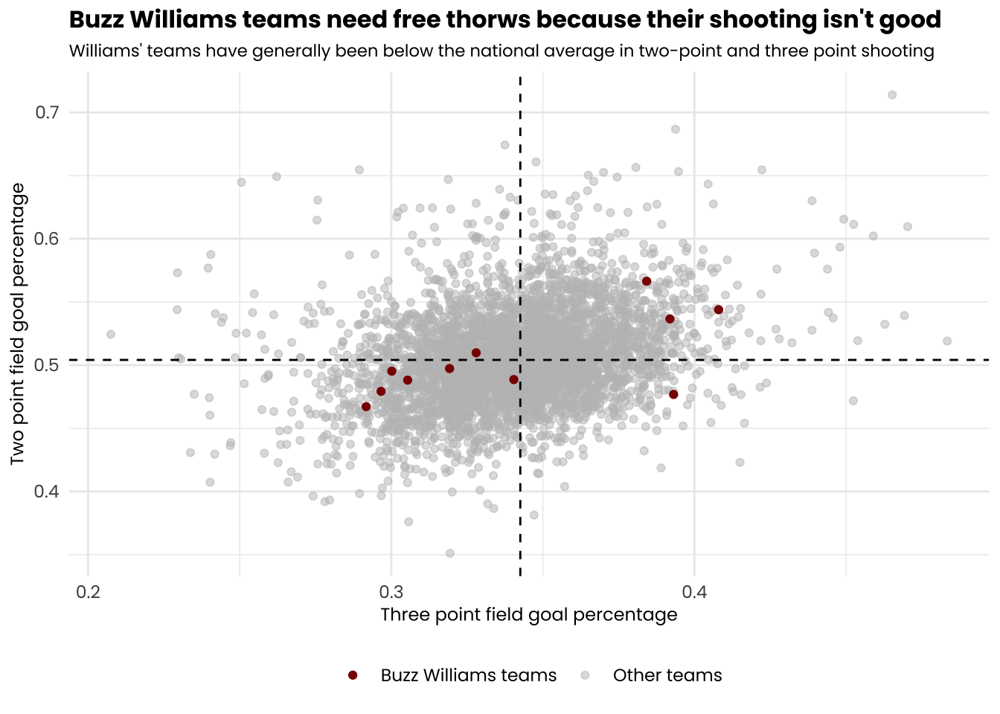

Rows: 111554 Columns: 58
── Column specification ────────────────────────────────────────────────────────
Delimiter: ","
chr (8): Season, Opponent, HomeAway, W_L, URL, Conference, Team, OT
dbl (49): Game, TeamScore, OpponentScore, TeamFG, TeamFGA, TeamFGPCT, Team3...
date (1): Date
ℹ Use `spec()` to retrieve the full column specification for this data.
ℹ Specify the column types or set `show_col_types = FALSE` to quiet this message.
`summarise()` has grouped output by 'Season'. You can override using the
`.groups` argument.
Code
fta_average <- logs |>summarize(overall_avg_fta =mean(TeamFTA, na.rm =TRUE),overall_avg_opp_fta =mean(OpponentFTA, na.rm =TRUE)) ggplot() +geom_point(data = logs_summary, aes(x = avg_opp_fta, y = avg_fta, color ="Other teams"), alpha =0.5) +geom_point(data = buzz_summary, aes(x = avg_opp_fta, y = avg_fta, color ="Buzz Williams teams"), size =1.5) +geom_hline(yintercept =19.33941, linetype ="dashed", color ="black") +annotate("text", x =max(logs_summary$avg_opp_fta), y =20.5, label ="National free throw attempt average", hjust =1, size =3) +scale_color_manual(name =NULL,values =c("Other teams"="gray", "Buzz Williams teams"="darkred") ) +labs(x ="Opponent free throw attempts per game",y ="Team free throw attempts per game",title ="Buzz Williams teams get to the free throw line..... a lot",subtitle ="Four of Williams' past 10 teams averaged at least five more throw attempts per game than the national rate" ) +theme_minimal() +theme(text =element_text(family ="poppins"),plot.title =element_text(size =12, face ="bold"),plot.subtitle =element_text(size =8.5),axis.title =element_text(size =9),legend.position ="bottom" )

In a 95-90 overtime win over Mount St. Mary’s on Wednesday that was significantly closer than it needed to be, Maryland attempted 47 (FOURTY SEVEN!!) free throws. Freshman Darius Adams alone shot 21. But game log data shows that while 47 free throw attempts may be an outlier, first-year Maryland Head Coach Buzz Williams’ reliance on free throws isn’t.
Getting to the line has been a defining feature of Williams teams throughout his career. Five games in at Maryland and the same appears to remain true. So far in 2025, Maryland is ninth nationally in free throw attempts per game.
Of Williams’ past 10 teams, seven attempted more free throws per game than the national average. Four of them got the line at least five more times than the national average. Three of them were his final three years at Texas A&M. Incidentally, or maybe not, that is the best three year stretch of Williams career since he left Marquette in 2014.
Williams has been quoted frequently stating that getting to the line and rebounding are his best routes to winning. Searching “Buzz Williams get to the free throw line” on Google yields pages of results of articles about Williams at Texas A&M talking about not free throw shooting, but free throw attempts. Asked about free throws and rebounding while still in College Station, Williams said in an On3 story: “I think that my answer, without being condescending, is that that’s literally the only recipe that we can follow.” (https://www.on3.com/college/texas-am-aggies/news/buzz-williams-states-rebounding-free-throws-are-literally-the-only-recipe-that-we-can-follow/)
One problem: While the Williams teams have gotten to the free throw line, they aren’t exactly hitting their shots consistently.
Code
ggplot() +geom_beeswarm(data = logs_summary |>filter(Season !="2025-2026"), aes(x = Season, y = avg_fgpct), color ="gray", alpha =0.5) +geom_beeswarm(data = buzz_summary |>filter(Season !="2025-2026"), aes(x = Season, y = avg_fgpct), color ="darkred") +geom_hline(yintercept =0.4439769, linetype ="dashed", color ="black") +labs(x ="",y ="Team free throw percentage",title ="Buzz Williams teams are getting to the line, but not consistently hitting",subtitle ="Of Williams' three Aggie teams getting to the line a lot, all shot below the national average" ) +theme_minimal() +theme(text =element_text(family ="poppins"),plot.title =element_text(size =12, face ="bold"),plot.subtitle =element_text(size =8.5),axis.title =element_text(size =9),legend.position ="bottom" )

Most concerning, perhaps, are those three Texas A&M teams at the end of Williams tenure in College Station. All three may have gotten to the three throw line a lot, but all three struggled to then put the ball in the basket which, generally, is indeed the goal. The prior two Williams teams were especially bad.
But this all poses a question of why Buzz Williams teams need to shoot so many free throws. According to field goal shooting data, Williams’ teams have consistently been poor shooting both on 2-point and 3-point field goals.
Code
ggplot() +geom_point(data = logs_summary, aes(x = avg_threepct, y = avg_twopct, color ="Other teams"), alpha =0.5) +geom_point(data = buzz_summary, aes(x = avg_threepct, y = avg_twopct, color ="Buzz Williams teams"), size =1.5) +geom_hline(yintercept =0.5041145, linetype ="dashed", color ="black") +geom_vline(xintercept =0.3425603, linetype ="dashed", color ="black") +scale_color_manual(name =NULL,values =c("Other teams"="gray", "Buzz Williams teams"="darkred") ) +labs(x ="Three point field goal percentage",y ="Two point field goal percentage",title ="Buzz Williams teams need free thorws because their shooting isn't good",subtitle ="Williams' teams have generally been below the national average in two-point and three point shooting" ) +theme_minimal() +theme(text =element_text(family ="poppins"),plot.title =element_text(size =12, face ="bold"),plot.subtitle =element_text(size =8.5),axis.title =element_text(size =9),legend.position ="bottom" )

Half of Williams’ teams over the last decade have been below the national average in two point and three point field goal shooting. Williams did have three teams above the national average in two point and three point shooting: all of which coming while he was at Virginia Tech.
This increases the priority of getting to the free throw line, for supposedly easy points. Even though, they haven’t always made the shots.
That leaves one final piece of the Buzz Williams mantra: rebounding.
Code
ggplot() +geom_beeswarm(data = logs_summary |>filter(Season !="2025-2026"), aes(x = Season, y = avg_rebounds, color ="Other teams"), color ="gray", alpha =0.5) +geom_beeswarm(data = buzz_summary, aes(x = Season, y = avg_rebounds, color ="Buzz Williams teams"), color ="darkred", size =1.5) +geom_hline(yintercept =32.24825, linetype ="dashed", color ="black") +labs(x ="",y ="Team rebounds per game",title ="Williams had elite rebounding teams at A&M. The others? Not so much.",subtitle ="Williams' Virginia Tech teams were consistently poor rebounding groups." ) +theme_minimal() +theme(text =element_text(family ="poppins"),plot.title =element_text(size =12, face ="bold"),plot.subtitle =element_text(size =8.5),axis.title =element_text(size =9),legend.position ="bottom" )
For as much as Williams has talked about the importance of rebounding during his career, the performance doesn’t always back that up. The past two years at Texas A&M, Williams had some truly elite rebouding groups.
No two teams have hit at Williams identity of rebounding and free throw attempts anywhere near as well as his last two seasons.
The other teams? Not so much. Williams’ Virginia Tech teams were just simply bad at rebounding. But only his past three teams at Texas A&M had even surpassed the national average in rebounds per game.